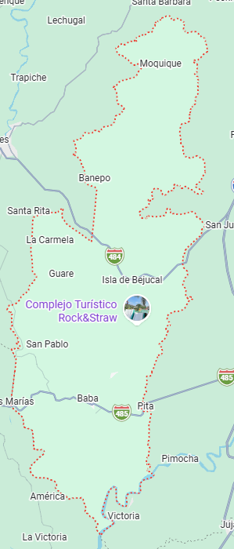

Reseña: Una de las poblaciones más antiguas y tradicionales de la Costa ecuatoriana, fundada en la época colonial. Jugó un rol decisivo en las gestas de la independencia del Ecuador de 1820.
Urbanas: Baba.
Rurales: Guare, Isla de Bejucal.
Arroz con pescado frito, bollos de verde con camarón de río y seco de pato.
Iglesia de la Rebelión de Baba: Conserva fachadas e historias coloniales de gran valor patrimonial y religioso.
Playas de Guare: Balnearios fluviales naturales rodeados de plantaciones de cacao y mango.
Hospedaje La Noble, Hostal Baba.
Jael Melo Olvera.

45.000 habitantes.
